5040C24 AIR CONDITIONING CASING - DISMANTLING AND REASSEMBLY AT THE BENCH
- Path
- Procedures > 50 AUXILIARY UNITS > 5040 AIR CONDITIONING CASING AND COMPONENTS > 5040C AIR CONDITIONING CASING AND COMPONENTS > 5040C24 AIR CONDITIONING CASING - DISMANTLING AND REASSEMBLY AT THE BENCH
- Kind
- repair procedure (removal / refitting; the operation number is the code)
- Applies to
- all engines; all production periods
- Interactive page
- https://sloeber94.github.io/elrnDB-fCrm/en/#/194000617
Applies to: all engines; all production periods
 Removing
Removing
 Refitting
Refitting1. Release the ducts for the left (1a) and right (1b) air vents from their housings.
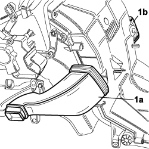
Applies to: all engines; all production periods
Op. 5040D80 AIR CONDITIONER SYSTEM WIRING BUNDLE - R R OR REPLACE
Op. 5040B32 EXPANSION VALVE (ORIFICE TUBE) R R WITH AIR CONDITIONER CASE REMOVED
1. Undo the two fixing bolts (1a) and remove the air conditioning air recirculation flap control motor (1b) from the air conditioning casing.
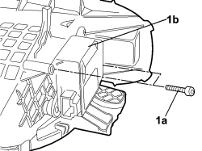
Applies to: all engines; all production periods
Op. 5040C34 AIR CONDITIONING FAN - R.R. WITH AIR CONDITIONING CASING REMOVED
Op. 5040C18 RECIRCULATION AIR INTAKE UNIT - R.R WITH AIR CONDITIONING CASING REMOVED
Op. 5040C54 AIR CONDITIONING HEATER RADIATOR - R+R WITH AIR CONDITIONING CASING REMOVED
Op. 5040C66 AIR CONDITIONING EVAPORATOR - R+R WITH AIR CONDITIONING CASING REMOVED
Op. 5040D88 CONTROL MOTOR OF ANY FLAP - R R WITH AIR CONDITIONER CASING REMOVED
Working along the right side of the air conditioning casing:
1. Undo the fixing bolts (1a) for the linkage assembly (1b) and remove them.
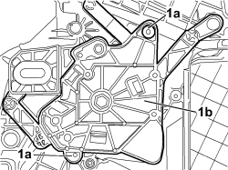
Applies to: all engines; all production periods
1. Working carefully, release the control pins from their housings.

Applies to: all engines; all production periods
- Remove the linkage assembly on the left side of the air conditioning casing repeating the operations described for the removal of the linkage assembly on the right side.
1.Working on the right side of the air conditioning casing remove the drive gear for the mixture actuator.
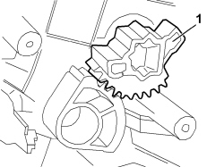
Applies to: all engines; all production periods
1. Undo the fixing bolts in the upper ventilation area and remove them.
2. Working carefully, release the mounting tabs in the front section.
3. Remove the upper ventilation area.
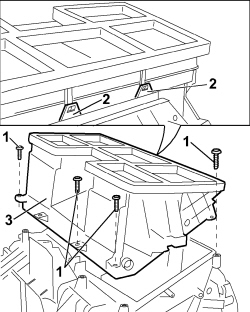
Applies to: all engines; all production periods
1. Remove the air distribution vanes in the upper ventilation area.
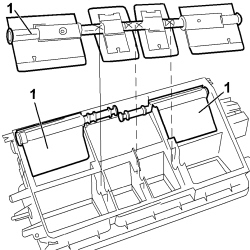
Applies to: all engines; all production periods
1. Undo the fixing bolt for the air distribution cover front trim and remove them.
2. Working on both sides, release the mounting tabs for the lower half casing trim.
3. Remove the front trim for the air distribution casing.
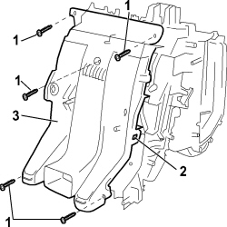
Applies to: all engines; all production periods
1. Remove the air distribution vanes (1a) lifting them up in the join area (1b) until they are released.
2. Remove the two air ducts.

Applies to: all engines; all production periods
1. Undo the fixing bolts for the air distribution cover lower casing and remove them.
2. Working carefully on both sides of the casing, release the mounting tabs (2a) from the housing (2b).
3. Remove the lower casing for air distribution cover.
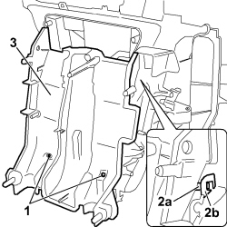
Applies to: all engines; all production periods
1. Undo the remaining fixing bolts and remove them.
2. Working carefully, release the mounting tabs securing the various parts of the casing and divided the half casings.
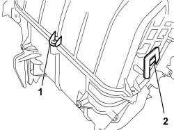
Applies to: all engines; all production periods
Refitting
Removing- Position the half casings for the air conditioning casing and secure them using the special fastenings.
- Tighten the retaining bolts.
- Position the lower half casing for the air distribution cover securing them to the special mountings.
- Tighten the retaining bolts.
1. Fit the air distribution vanes (1a) attaching them to their coupling (1b).
2. Fit the two air ducts in their housings.
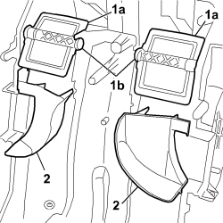
Applies to: all engines; all production periods
- Position the upper trim for the air distribution cover securing it to the special mountings on the lower half casing.
- Tighten the retaining bolts.
Working in the upper ventilation area still removed:
1. Fit the air distribution vanes in their housings.

Applies to: all engines; all production periods
- Position the upper ventilation area on the air conditioning casing securing it to the front area using the special fastening tabs.
- Tighten the retaining bolts.
1. Working on the right side of the casing place the mixture actuator drive gear in its housing.

Applies to: all engines; all production periods
Working on both sides of the casing, fit the linkage assemblies.
1. Fit the control pins in the housings in the distribution vanes.
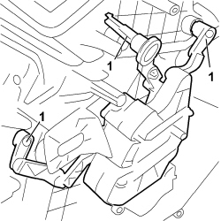
Applies to: all engines; all production periods
- Tighten the bolts fixing the linkage assembly on the side of the casing.
Op. 5040D88 CONTROL MOTOR OF ANY FLAP - R R WITH AIR CONDITIONER CASING REMOVED
Op. 5040C66 AIR CONDITIONING EVAPORATOR - R+R WITH AIR CONDITIONING CASING REMOVED
Op. 5040C54 AIR CONDITIONING HEATER RADIATOR - R+R WITH AIR CONDITIONING CASING REMOVED
Op. 5040C18 RECIRCULATION AIR INTAKE UNIT - R.R WITH AIR CONDITIONING CASING REMOVED
Op. 5040C34 AIR CONDITIONING FAN - R.R. WITH AIR CONDITIONING CASING REMOVED
- Place the air conditioning recirculation flap control motor on the recirculation air intake assembly.
- Tighten the retaining bolts.
Op. 5040B32 EXPANSION VALVE (ORIFICE TUBE) R R WITH AIR CONDITIONER CASE REMOVED
Op. 5040D80 AIR CONDITIONER SYSTEM WIRING BUNDLE - R R OR REPLACE
- Fit the ducts for the left and right air vents from their housings.
Topics linked from this page (7)
- 5040B32 EXPANSION VALVE (ORIFICE TUBE) R R WITH AIR CONDITIONER CASE REMOVED
- 5040C18 RECIRCULATION AIR INTAKE UNIT - R.R WITH AIR CONDITIONING CASING REMOVED
- 5040C34 AIR CONDITIONING FAN - R.R. WITH AIR CONDITIONING CASING REMOVED
- 5040C54 AIR CONDITIONING HEATER RADIATOR - R+R WITH AIR CONDITIONING CASING REMOVED
- 5040C66 AIR CONDITIONING EVAPORATOR - R+R WITH AIR CONDITIONING CASING REMOVED
- 5040D80 AIR CONDITIONER SYSTEM WIRING BUNDLE - R R OR REPLACE
- 5040D88 CONTROL MOTOR OF ANY FLAP - R R WITH AIR CONDITIONER CASING REMOVED